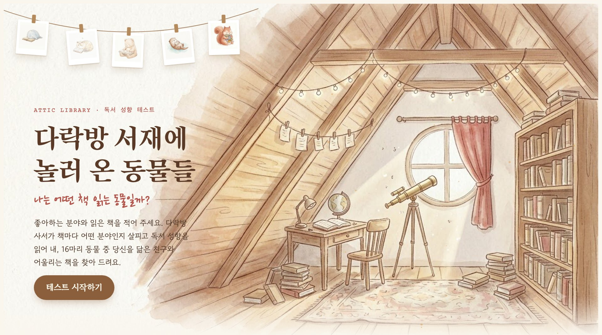
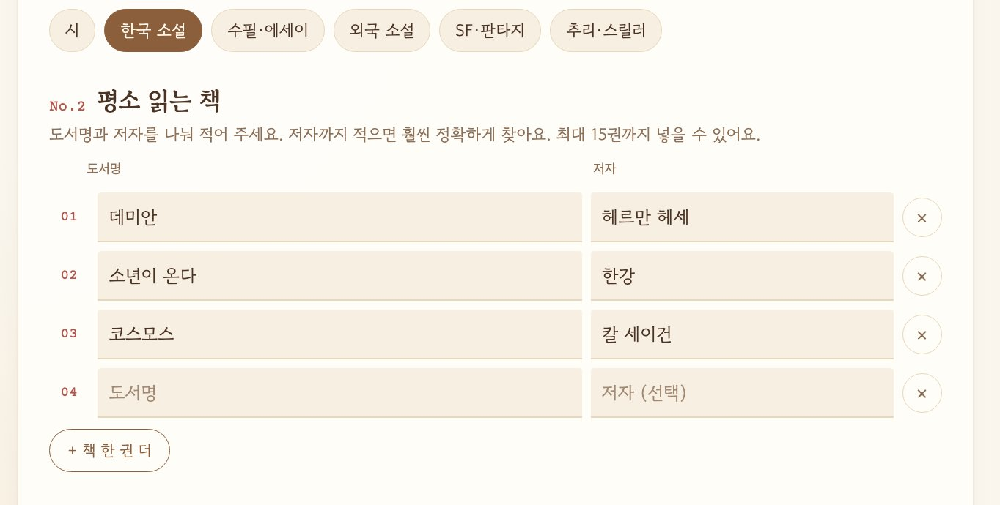
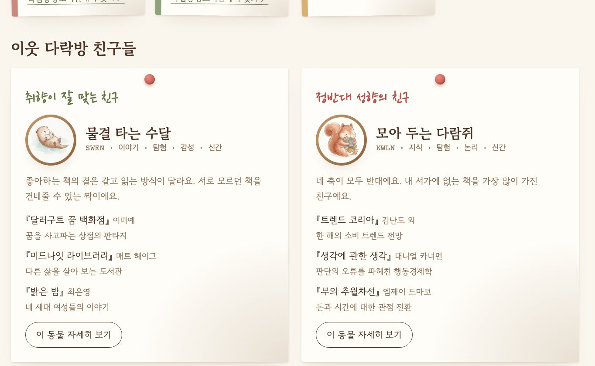

문헌정보학과 바이브 코딩 공모전
다락방 서재에
놀러 온 동물들
나는 어떤 책 읽는 동물일까?
읽은 책으로 독서 성향을 읽어 주는
다락방 사서 서비스
문헌정보학과 202406224 홍현아
Google Flow로 직접 그렸습니다
프롬프트 한 줄이 고래가 되기까지
프롬프트 예시 · 깊은 바다의 고래
a small round baby whale, pale blue-gray, lying on its belly with a thick old book open in front of it, eyes softly closed as if moved by the story, delicate hand-drawn illustration, thin sketchy warm brown colored-pencil outline, soft pale watercolor wash, fluffy fur drawn with fine short strokes, tiny dot eyes, very simple minimal face, plain off-white watercolor paper background, no text
동물마다 다른 부분 책을 펼친 채 엎드려, 이야기에 감동해 눈을 감은 아기 고래
16장 모두 같은 부분 갈색 색연필 선, 연한 수채, 점 눈, 흰 종이 배경
Flow가 만든 후보 2장


동물 16마리 × 후보 2장 = 32장, 다락방 배경 3장을 만들어 그중 18장을 썼습니다.
한 사람의 분석 예시
예시 독자는
고래가 되었습니다
SDEC
깊은 바다의 고래
서비스 화면
실제 화면






- 첫 화면수채화 다락방, 빨랫줄의 동물들
- 입력분야, 도서명·저자, 습관 질문, 책장 동의
- 결과동물 카드, 정밀 분석 안내
- 이웃 친구잘 맞는 친구와 정반대 친구의 책
- 이웃들의 책장같은 동물, 다른 동물이 꽂은 책
- 독서 상담실내 Claude로 받는 깊은 상담
새 기능 · 이용자 데이터베이스
다락방 이웃들의 책장
책장에 꽂기
테스트를 마칠 때 동의하면 내가 적은 책을 보탭니다.
구글 시트에 익명 저장
도서명, 저자, 동물 유형만 한 줄씩. 이름과 이메일은 받지 않습니다.
동물별 책장으로
같은 동물, 다른 동물이 많이 꽂은 책 순서로 책등을 세웁니다.
부적절한 제목은 시트에서 그 줄을 지우면 1분 안에 사라집니다.
지금 이 순간의 책장 구글 시트에서 불러오는 중
–명이 –권을 꽂았어요
바이브 코딩으로 만든 과정
처음 76분 동안, 10번 고쳐 배포했습니다

도구 · Claude Code 대화로 코딩 · Google Flow 일러스트 · Claude 페이지 속 사서 · 구글 시트 책장 저장
그 뒤에 더한 것 · 발표 슬라이드 · 다락방 이웃들의 책장 · 다락방 독서 상담실
당신의 다락방에는
어떤 동물이 놀러 왔나요?
지금 바로 해 보세요
독서 상담실 · claude.ai/artifact/DmqLE6gvBbLZoa9okZhq62